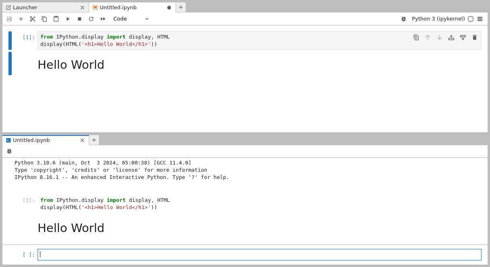
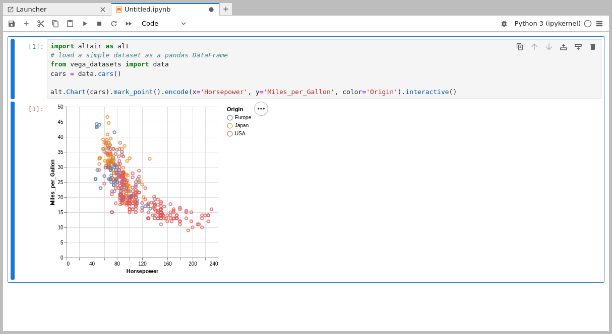

File and Output Formats#
JupyterLab provides a unified architecture for viewing and editing data in a wide variety of formats. This model applies whether the data is in a file or is provided by a kernel as rich cell output in a notebook or code console.
For files, the data format is detected by the extension of the file (or
the whole filename if there is no extension). A single file extension
may have multiple editors or viewers registered. For example, a Markdown
file (.md) can be edited in the file editor or rendered and
displayed as HTML. You can open different editors and viewers for a file
by right-clicking on the filename in the file browser and using the
“Open With” submenu:
To use these different data formats as output in a notebook or code console, you can use the relevant display API for the kernel you are using. For example, the IPython kernel provides a variety of convenience classes for displaying rich output:
from IPython.display import display, HTML
display(HTML('<h1>Hello World</h1>'))
Running this code will display the HTML in the output of a notebook or code console cell:
The IPython display function can also construct a raw rich output message from a dictionary of keys (MIME types) and values (MIME data):
from IPython.display import display
display({'text/html': '<h1>Hello World</h1>', 'text/plain': 'Hello World'}, raw=True)
Other Jupyter kernels offer similar APIs.
The rest of this section highlights some of the common data formats that JupyterLab supports by default. JupyterLab extensions can also add support for other file formats.
Markdown#
File extension:
.mdMIME type:
text/markdown
Markdown is a simple and popular markup language used for text cells in the Jupyter Notebook.
Markdown documents can be edited as text files or rendered inline:
The Markdown syntax supported in this mode is the same syntax used in the Jupyter Notebook (for example, LaTeX equations work). As seen in the animation, edits to the Markdown source are immediately reflected in the rendered version.
Images#
File extensions:
.bmp,.gif,.jpeg,.jpg,.png,.svgMIME types:
image/bmp,image/gif,image/jpeg,image/png,image/svg+xml
JupyterLab supports image data in cell output and as files in the above
formats. In the image file viewer, you can use keyboard shortcuts such
as + and - to zoom the image, [ and ] to rotate the image,
and H and V to flip the image horizontally and vertically. Use
I to invert the colors, and use 0 to reset the image.
To edit an SVG image as a text file, right-click on the SVG filename in the file browser and select the “Editor” item in the “Open With” submenu:
Delimiter-separated Values#
File extension:
.csvMIME type: None
Files with rows of delimiter-separated values, such as CSV files, are a common format for tabular data. The default viewer for these files in JupyterLab is a high-performance data grid viewer which can display comma-separated, tab-separated, and semicolon-separated values:
While tab-separated value files can be read by the grid viewer, it currently does not automatically recognize .tsv files.
To view, you must change the extension to .csv and set the delimiter to tabs.
To edit a CSV file as a text file, right-click on the file in the file browser and select the “Editor” item in the “Open With” submenu:
JupyterLab’s grid viewer can open large files, up to the maximum string size of the particular browser. Below is a table that shows the sizes of the largest test files we successfully opened in each browser we support:
Browser |
Max Size |
|---|---|
Firefox |
1.04GB |
Chrome |
730MB |
Safari |
1.8GB |
The actual maximum size of files that can be successfully loaded will vary depending on the browser version and file content.
JSON#
File extension:
.jsonMIME type:
application/json
JavaScript Object Notation (JSON) files are common in data science. JupyterLab supports displaying JSON data in cell output or viewing a JSON file using a searchable tree view:
To edit the JSON as a text file, right-click on the filename in the file browser and select the “Editor” item in the “Open With” submenu:
HTML#
File extension:
.htmlMIME type:
text/html
JupyterLab supports rendering HTML in cell output and editing HTML files as text in the file editor.
LaTeX#
File extension:
.texMIME type:
text/latex
JupyterLab supports rendering LaTeX equations in cell output and editing LaTeX files as text in the file editor.
PDF#
File extension:
.pdfMIME type:
application/pdf
PDF is a common standard file format for documents. To view a PDF file in JupyterLab, double-click on the file in the file browser:
Vega/Vega-Lite#
Vega:
File extensions:
.vg,.vg.jsonMIME type:
application/vnd.vega.v5+json
Vega-Lite:
File extensions:
.vl,.vl.jsonMIME type:
application/vnd.vegalite.v3+json
Vega and Vega-Lite are declarative visualization grammars that enable visualizations to be encoded as JSON data. For more information, see the documentation of Vega or Vega-Lite. JupyterLab supports rendering Vega 5.x and Vega-Lite 3.x data in files and cell output.
Vega-Lite 1.x files, with a .vl or .vl.json file extension, can
be opened by double-clicking the file in the file browser:
The files can also be opened in the JSON viewer or file editor through the “Open With…” submenu in the file browser content menu:
As with other files in JupyterLab, multiple views of a single file remain synchronized, enabling you to interactively edit and render Vega/Vega-Lite visualizations:
The same workflow also works for Vega 2.x files, with a .vg or
.vg.json file extension.
Output support for Vega/Vega-Lite in a notebook or code console is provided through third-party libraries such as Altair (Python), the vegalite R package, or Vegas (Scala/Spark).
A JupyterLab extension that supports Vega 3.x and Vega-Lite 2.x can be found here.